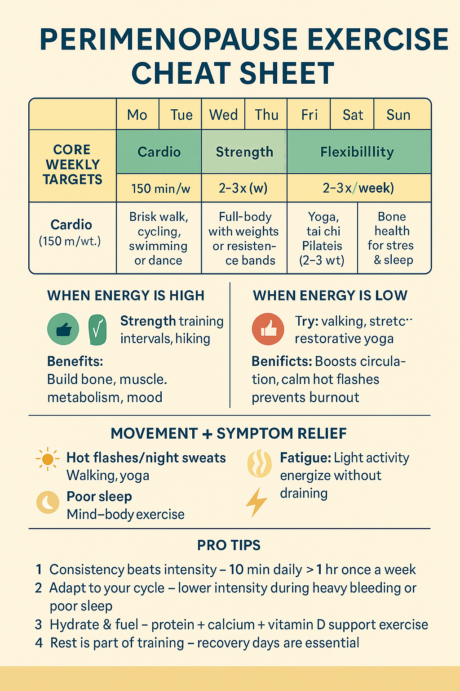

<!DOCTYPE html>
<html lang="en">
<head>
  <meta charset="UTF-8">
  <meta name="viewport" content="width=device-width, initial-scale=1.0">
  <title>Perimenopause and Exercise: What Really Works | Second Spring</title>

  <!-- Styles -->
  <link rel="stylesheet" href="styles.css">
  <link rel="stylesheet" href="blog.css">

  <!-- Navigation and Dynamic Elements -->
  <script src="navigation.js" defer></script>
  <script src="blog-posts.js" defer></script>
  <script src="blog-template.js" defer></script>

  <!-- FloDesk Script -->
  <script src="https://assets.flodesk.com/universal.js"></script>
</head>

<body>
  <!-- Header Placeholder -->
  <div id="navigation-placeholder"></div>

  <!-- Blog Content will be loaded here -->
  <div id="blog-container"></div>

  <!-- Footer Placeholder -->
  <div id="footer-placeholder"></div>

  <script>
    document.addEventListener('DOMContentLoaded', function() {
      // The unique content for this blog post
      const blogContent = `
        <div class="blog-header">
          <h1>Perimenopause and Exercise: What Really Works</h1>
          <div class="blog-meta">
            <span class="blog-date">October 3, 2025</span>
            <span class="blog-topic">Move – Movement & Strength</span>
            <span class="blog-category">Hormone-Safe Workouts</span>
          </div>
        </div>

        

        <div class="blog-content-text">
          <p>Perimenopause is often painted as a 'transition you just survive until menopause', but the way we move during this period can actually transform how you experience it...</p>
          
          <h2>What the Research Says About Exercise and Perimenopause</h2>
          <p>Studies consistently show that regular physical activity can help manage perimenopausal symptoms...</p>
          
          
          
          <h2>What "regular physical activity" looks like in perimenopause</h2>
          <p>The key is finding what works for your body right now, not what worked five years ago...</p>
        </div>
      `;

      // Load the blog template with content
      const blogContainer = document.getElementById('blog-container');
      blogContainer.innerHTML = createBlogLayout(blogContent);
      
      // Initialize the blog template functionality
      initializeBlogTemplate();
      
      // Load related posts specific to this blog
      loadRelatedPosts();
    });

    // Related posts specific to this blog post
    function loadRelatedPosts() {
      const relatedPosts = [
        {
          title: "Sleep During Perimenopause: Finding Rest When Your Body Won't Let You",
          featuredText: "From symptom management to personalized insights, we merge research-backed knowledge with ancient systems to help women thrive today.",
          file: "blog-sleep-perimenopause.html"
        },
        {
          title: "Hot Flashes: Understanding and Managing the Heat",
          featuredText: "Gentle activities like walking or yoga are enough on low-energy days. Strength training and cardio build resilience when energy is higher.",
          file: "blog-hot-flashes.html"
        }
      ];

      const relatedPostsGrid = document.getElementById('related-posts-grid');
      if (!relatedPostsGrid) return;

      relatedPostsGrid.innerHTML = relatedPosts.map(post => `
        <div class="related-post-card">
          <h4 class="related-post-title">${post.title}</h4>
          <p class="related-post-featured-text">${post.featuredText}</p>
          <a href="${post.file}" class="related-post-link">
            Read More
            <svg width="16" height="16" viewBox="0 0 24 24" fill="none" stroke="currentColor" stroke-width="2" stroke-linecap="round" stroke-linejoin="round">
              <path d="M5 12h14"></path>
              <path d="M12 5l7 7-7 7"></path>
            </svg>
          </a>
        </div>
      `).join('');
    }
  </script>
</body>
</html>
